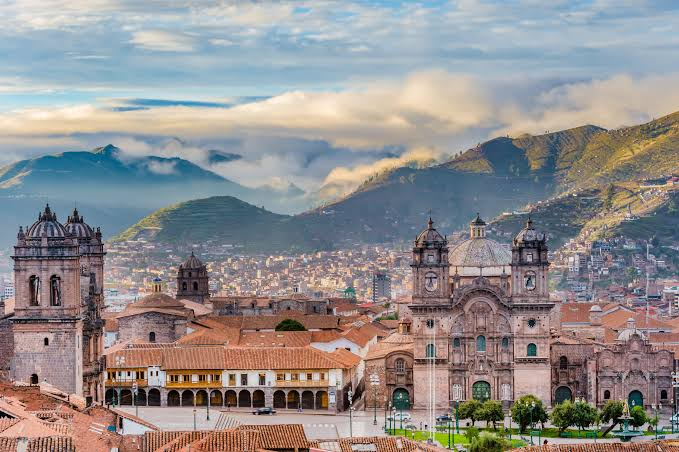
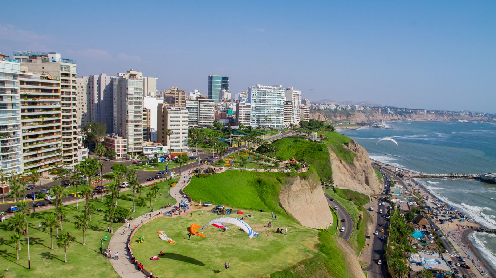

Destinations to Explore
Three incredible places to experience the beauty of Peru.

Cusco
A historic city surrounded by the Andes Mountains, known for its Inca heritage, beautiful architecture, and rich cultural traditions.

Lima
Peru's capital city, famous for its coastal views, incredible cuisine, historic neighborhoods, and vibrant culture.

Machu Picchu
An extraordinary ancient Inca site surrounded by breathtaking mountains and natural beauty.
My Recommended Activities
-
Cusco
- Visit the Plaza de Armas
- Explore the San Pedro Market
- Discover the Sacred Valley
-
Lima
- Walk along the Miraflores coastline
- Explore Barranco
- Try authentic Peruvian cuisine
-
Machu Picchu
- Explore the ancient Inca ruins
- Visit Aguas Calientes
- Enjoy the surrounding mountain views